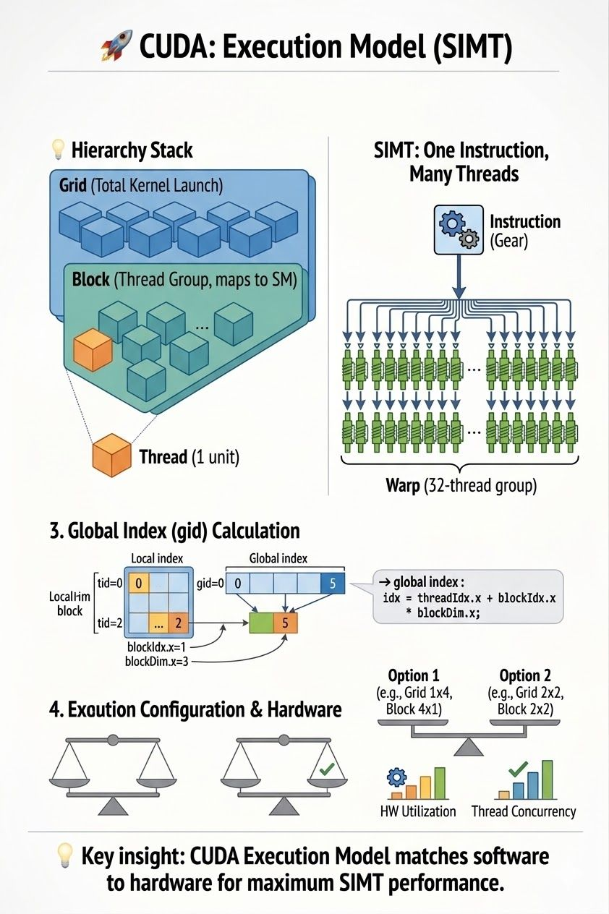

CUDA's execution model: threads, warps, and how the GPU schedules them
Most people think CUDA is just about parallel computation. It's not. Here's the CUDA execution model, and how the GPU orchestrates thousands of threads.
The hierarchy defines everything
- Thread — the smallest unit of execution.
- Block — a group of threads, scheduled on an SM.
- Grid — a group of blocks, per kernel launch.
GPUs don't execute threads individually
Threads are grouped into warps (32 threads); threads in a warp run together, executed on SMs using SIMT (Single Instruction, Multiple Threads).
Indexing is where things get tricky
A thread index is only unique within a block. The global index is:
idx = blockIdx.x * blockDim.x + threadIdx.x;Launch configuration is a performance decision
dim3 grid_size(x, y, z);
dim3 block_size(x, y, z);
KernelName<<<grid_size, block_size>>>(...);This defines how your workload maps to hardware.
Key insight
CUDA is not just about parallelism. It's about execution structure.
